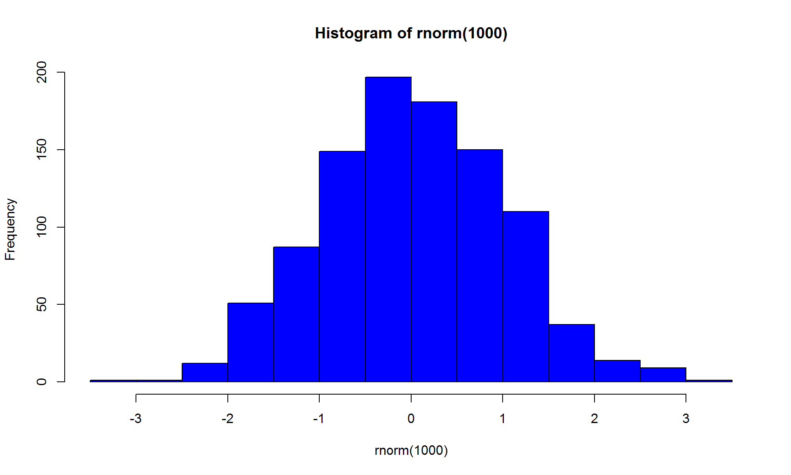

Introduction
En los próximos capítulos, aprenderás los conceptos básicos y los fundamentos de bitcoin, qué es, cómo comprarlo y, quizás lo más importante, la pregunta de por qué es importante para nuestra cultura y sociedad en general.
Hoy, te daré una introducción rápida y una descripción general de la historia de bitcoin y cómo comenzó todo, lo que en realidad es más importante de lo que la mayoría de la gente sabe. La historia de origen es única y un requisito absoluto para aprender sobre Bitcoin, por lo que puedes comprender filosóficamente cómo continúa creciendo, expandiéndose y captando la atención del mundo.
¿Quién creó Bitcoin?
Nadie lo sabe realmente. Bueno, eso no es del todo cierto, como alguien debe saber, pero si lo hacen (y si todavía están vivos), entonces es uno de los secretos digitales mejor guardados de nuestro tiempo. El punto es que en realidad nadie sabe quién creó originalmente Bitcoin, pero sí tenemos un nombre: Satoshi Nakamoto. Esta persona (o grupo de personas) fue autor de un documento técnico titulado, Bitcoin: Un Peer-to-Peer Electronic Cash System, el 31 de octubre de 2008, unos meses después de que el nombre el dominio “bitcoin.org”, se registró el 18 de agosto de 2008.
Este documento técnico comenzó la rueda de la fortuna, ya que se publicó en una lista de correo de criptografía y se envió a un pequeño grupo de personas para leer, reflexionar y comentar. ¿Qué podría significar esto? ¿Qué podría hacer esta nueva tecnología?
El 3 de enero de 2009, la red bitcoin se implementó con la primera aplicación de código abierto (es decir, el cliente de software), así como la primera emisión de 50 bitcoins. El alias continuó visible en público hasta abril de 2011, cuando dejó el desarrollo de la tecnología a un grupo creciente de voluntarios apasionados.
pero debe haber salido de algún lugar, ¿verdad?
Sí, bitcoin tenía un poco de prehistoria, ya que había una serie de tecnologías y protocolos digitales utilizados en la creación de bitcoin y, en consecuencia, una serie de individuos y creadores detrás de esos inventos. Específicamente, aquí hay algunos inventos tecnológicos que “Satoshi Nakamoto” usa, menciona y da crédito a través de su documento técnico: • Una tecnología y protocolo de efectivo digital llamado ecash por David Chaum y Stefan Brands • Un sistema de “prueba de trabajo” llamado hashcash por Adam Back para monitoreo y control de spam, que eventualmente fue construido por Hal Finney, quien creó un protocolo de prueba de trabajo reutilizable • Un sistema de escasez distribuido construido sobre “dinero b” creado por Wei Dai • Una tecnología llamada “bitgold” por Nick Szabo que propuso un mecanismo para el control de la inflación del mercado
Nuevamente, es importante tener en cuenta que todas estas personas han negado ser Satoshi Nakamoto o ser parte del colectivo que puede entenderse canónicamente como “Satoshi Nakamoto”.
¿Por qué es importante?
La conclusión clave aquí es que el (los) autor (es) original (es) es completamente desconocido, y aunque de vez en cuando se escuche de alguien que de repente se atribuye la propiedad de la identidad de Satoshi Nakamoto, en general y culturalmente se acepta que nunca podremos conocer la identidad del creador original.
Y eso es algo bueno.
Como ves, hay muchas razones importantes, pero aquí hay dos para comenzar: en primer lugar, es importante que nadie sepa (y nunca sepa) quiénes son porque lo que hace que Bitcoin sea tan emocionante es que al mismo tiempo es de código abierto (personas como tu y yo podemos descargar, usar y sacar provecho del software original en cualquier lugar y en cualquier momento que queramos), y en segundo lugar, está “descentralizado”, lo que significa que ninguna persona, entidad u organización “posee” o controla la utilidad y el valor de bitcoin.
Bitcoin y las tecnologías y protocolos subyacentes se crearon y diseñaron para ser entregados libremente al mundo para introducirnos en una nueva forma de pensar, interactuar y realizar transacciones con otros. En muchos sentidos, tienes tanto derecho (y derecho) de decir que eres Satoshi Nakamoto como cualquier otra persona.
pestañas
pestaña 2
hist(rnorm(1000), col="blue")

2 fundamentos de Bitcoin 💰
Hola y bienvenido a la segunda lección de este curso. Ayer, hablamos sobre quiénes eran los creadores y quién era responsable, y por qué es importante.
Hoy, nos adentramos y le daremos una visión general amplia de lo que es y cómo podemos entenderlo mejor.
¡Empezamos!
¿Moneda, tecnología, software, red o filosofía?
El término “bitcoin” es simultáneamente una serie de cosas, ya que es una unidad monetaria (una “moneda” exacta y específica), pero también se usa para describir el software de código abierto, así como el marco tecnológico y la red de un nuevo ecosistema monetario digital.
No es irónico que bitcoin se pueda describir como una colección de conceptos, principios y tecnologías, así como “Satoshi Nakamoto” a menudo se entiende como una colección de inventores e inventos.
Pero para nuestro propósito, usaremos más a menudo el término bitcoin como unidad de moneda, que es la forma más fácil de entender y cómo se usa en conversaciones casuales.
Los bitcoins, como unidad de moneda, se utilizan para almacenar y transmitir valor entre los participantes en el ecosistema y red de bitcoin. Lo hacen comunicándose a través de Internet usando diferentes de máquinas, aplicaciones y dispositivos, como la computadora de tu casa o tu teléfono móvil. Un bitcoin podría incluso codificarse como un emoji o en forma de imágenes en una tarjeta postal.
Los participantes pueden usar esta unidad de moneda para comprar y vender bienes y servicios, tal como se hace hoy, aunque la mayoría de los países apenas empiezan a reconocer a Bitcoin como moneda. Por ejemplo, EE. UU., Los Países Bajos, Canadá, Corea del Sur y algunos otros países están adaptándose a la idea de que la gente use Bitcoin como medio pago. Además, los participantes pueden enviar dinero a otros participantes (individuos y organizaciones) en la red bitcoin (o fuera de ella), así como intercambiarlos por otras unidades de valor o moneda.
En realidad, la utilidad de bitcoin solo se limita a la propia imaginación porque es una forma de moneda completamente virtual, y para ser súper técnico, se entiende como un “tipo de contenido”, lo que significa que se puede transmitir en cualquier lugar en cualquier cosa en cualquier forma.
¿Qué hace que esto sea tan diferente?
Bueno, ¿quieres decir además del hecho de que es una moneda completamente virtual sin monedas físicas (o papel)? Y si queremos ser completamente precisos técnicamente, los bitcoins tampoco son ni siquiera monedas digitales, per se. Las monedas están implícitas en la transacción real entre los participantes, el remitente y el receptor.
Como ya había mencionado, no hay una autoridad central que acuñe o controle el valor de un bitcoin, no hay banco central o gobierno. El control y la agencia definitivos se gestionan, mantienen y declaran a través de cada participante individual, y eso te incluye a ti. Esto significa que eres, filosófica y pragmáticamente, es tu propio banco. Bitcoin no tiene fronteras y no requiere el permiso de nadie para ser utilizado. Es resistente a la censura e imposible de detener. Bitcoins y las transacciones entre participantes son rápidas, seguras y relativamente baratas.
Finalmente, es simultáneamente pseudónimo y transparente, lo que significa que los participantes pueden enviar y recibir valor sin tener que identificarse (es decir, compartir información personal como nombres o direcciones físicas) y que cada transacción se registra para que todos la vean en un libro contable disponible al público, llamado blockchain o cadena de bloques (hablaremos sobre blockchain con más detalle en la próxima lección).
Se que es mucho para asimilar, por lo que aquí terminamos la lección. Piensa y reflexiona sobre estos principios y características fundamentalmente diferentes de bitcoin.
Mañana entraremos al tema de la minería de bitcoins, y por qué es importante en la creación de nuevos bitcoins y como base de validación de las transacciones.
3 Fundamentos de Bitcoin 💰
¡Bienvenido al día 3 de los conceptos básicos de Bitcoin! Estoy muy contento de que estés aquí y de que sigas conmigo. Ayer, analizamos las características principales de bitcoin y lo que lo hace muy, muy diferente de otras formas de dinero. Para mucha gente es difícil de creer que puedes enviar bitcoins codificados a través de una radio de onda corta, via satélite o en una tarjeta postal.
No te desanimes si no lo comprendes al principio o si sientes que tomará tiempo acostumbrarte al concepto de tecnología bitcoin. Hay tiempo y estoy aquí para acompañarte en esta jornada. Ahora, sigamos el curso y demos un vistazo rápido a la minería de bitcoin, ya que es una parte esencial de tu comprensión de bitcoin.
Cómo funciona la minería y blockchain
Bitcoin es un sistema distribuido entre pares (peer to peer), y los bitcoins se crean a través de un proceso llamado “minería”. Cualquier participante que extraiga bitcoin puede llamarse efectivamente “minero”.
La minería es relativamente fácil de entender porque es simplemente un proceso de computadoras especializadas que intentan resolver problemas matemáticos. Ahora, hay dos principios importantes a tener en cuenta en el proceso de minería: el primero es que el problema matemático es difícil de resolver, y el segundo es que los mineros están compitiendo entre sí para resolver los problemas matemáticos. Es esencialmente una carrera entre los mineros para ver quién puede procesar las transacciones de bitcoin más rápido y descubrir simultáneamente las soluciones a estos complejos problemas matemáticos. El ganador de la carrera presta un servicio a la red bitcoin al validar las transacciones entre los participantes, también se le otorga bitcoin por su tiempo, esfuerzo e inversión en equipo y electricidad para resolver esos problemas. Finalmente, una tecnología resultante de Bitcoin es “blockchain” o cadena de bloques. Por ahora, solo necesitas saber que blockchain es un libro contable distribuido, un registro de todas las transacciones de bitcoin que han ocurrido, y estos registros se validan a través de la minería. Uno de los atributos más importantes de la cadena de bloques es que permite a bitcoin ser inmutable, resistente a la manipulación y al fraude.
¿Por qué es tan popular?
Puedes empezar a ver por qué la minería es tan atractiva para las personas (y las organizaciones), ya que existe un potencial real de ganar bitcoins por el servicio prestado. Basado en el algoritmo y protocolo programático subyacente, los premios de bitcoin se otorgan a los mineros aproximadamente cada diez minutos, lo que regula la entrega y emisión de bitcoin. Por diseño, la cantidad de bitcoin creado en cada bloque se reduce a la mitad cada cuatro años. En consecuencia, hay un número finito de bitcoins que se emitirá, y ese número es de 21 millones. El último bitcoin se emitirá alrededor del año 2140. Es por eso que quizá hayas escuchado que Bitcoin es un “instrumento financiero deflacionario”, a diferencia de todas las monedas fiat, que son fundamentalmente inflacionarias y basadas en deuda. Realmente puedes ser tu propio banco, usando una moneda que tiene valor real y utilidad sin permiso y sin ninguna autoridad central o controles cambiarios. ¿Cuántas veces puedo decir “revolucionario” en estas lecciones? Mañana, veremos cómo comprar tu primer bitcoin y cómo puedes experimentar esta nueva moneda digital revolucionaria.
4 Los fundamentos de Bitcoin 💰
Bienvenido a la cuarta lección de los conceptos básicos de bitcoin.
Ahora puedes decir con confianza que tienes más fundamentos en torno a la tecnología subyacente que la mayoría de las personas en el planeta (y esto será cierto durante por algún tiempo). Hoy, vamos a hacer algo muy emocionante. ¡Vas a investigar y prepararte para comprar bitcoin!
Lo primero que hay que hacer
Lo bueno de bitcoin es que es una maravilla tecnológica en su complejidad, pero también accesible y útil como una forma de valor real. Desafortunadamente, no es tan fácil comprar o ganar bitcoins, al menos no en este momento. En un futuro muy previsible, todos podremos realizar transacciones y traer nuevos “bitcoiners” (así nos referimos a los poseedores de Bitcoin) de forma rápida y fácil, pero nuevamente, todavía estamos en en una etapa muy temprana. A diferencia de obtener dólares, euros o pesos de alguien, no puedes comprar bitcoins sin tener un lugar para almacenarlos. En otras palabras, primero debe obtener una cartera (o billetera) bitcoin antes de comprar o recibir cualquier bitcoin. Esto tiene sentido, de la misma forma que si compras oro, debes tener un lugar seguro para resguardarlo.
Muchas carteras de Bitcoin para elegir
Primero, una “cartera” de bitcoin se entiende técnicamente como una interfaz de usuario para el sistema bitcoin, muy parecida a un navegador web que usas para interactuar y conectarte a internet. Actualmente hay muchas implementaciones e incluso marcas de carteras bitcoin (y se agregan más a diario), por lo que depende de ti, tu habilidad técnica y preferencias personales. En un nivel muy alto, hay cinco tipos de cartera que puede elegir: Una cartera de software de escritorio es software que puedes usar en los sistemas operativos macOS, Windows o Linux y que puede usarse fácilmente (pero a menudo de forma insegura). No es la opción más segura ya que depende del sistema operativo y puede ser vulnerada por virus o malware.
Una cartera móvil es exactamente lo que crees que es: una app que se ejecuta en cualquier sistema operativo móvil como iOS (para iPhone) y Android. Esta es la forma más común de cartera, ya que refleja más de cerca la cartera física y es más fácil de entender por los nuevos bitcoiners. Una cartera web es una cartera bitcoin a la que se accede a través de su dispositivo electrónico (computadora de escritorio o dispositivo móvil) en un navegador web como Google Chrome, Apple Safari, Mozilla Firefox u Opera. Estas carteras son propiedad y se administran en un servidor controlada por un proveedor externo.
Muchos nuevos bitcoiners comenzarán aquí, pero no es una buena idea mantener muchos bitcoins en estos sistemas, ya que pueden ser pirateados o comprometidos con muy pocos recursos para el usuario final en caso de pérdida. Una cartera de hardware son dispositivos digitales físicos que generalmente funcionan a través de USB o un protocolo de hardware similar y es una de las formas más seguras y probadas de almacenar bitcoin y otras monedas digitales. Puedes, por supuesto, perderlos, y siempre existe el riesgo de que se dañen o se destruyan accidentalmente. Una cartera de papel es exactamente lo que imagina que es: una impresión física de las llaves privadas que controlan el bitcoin. Personas creativas incluso han grabado sus llaves en otros materiales como madera, piedra y metal. Esta solución fuera de línea de baja tecnología es altamente segura y a menudo se llama almacenamiento en frío. Vale la pena señalar que muchas personas “diversifican” sus cartera con fines de seguridad, por lo que no es raro que un solo participante tenga todo tipo de carteras, muchas para tipos específicos de transacciones o casos de uso. Recuerda que siendo tu propio banco, las decisiones y la responsabilidad de la custodia, son tuyas. Ahora ya sabes cuál es el primer paso importante para enviar y recibir su primer bitcoin. Mañana, finalmente veremos la explicación de cómo hacerlo.
Por ahora es todo. Gracias y hasta la próxima.
Día #5 (de 10): Fundamentos de Bitcoin 💰
¡Bienvenido a la quinta lección del curso!
Antes de comenzar, solo quiero agradecerte haberme acompañado durante los últimos cuatro días. A medida que llegamos en la primera mitad del curso, solo quiero decirte que es un privilegio y un honor compartir lo se sobre bitcoin.
¡El único pago que me gustaría es que completes con éxito el curso y luego lo envíes a la mayor cantidad de personas posible!
¡Pero hoy es el día en que te ayudaré a obtener su primer bitcoin o, al menos, prepararte para comprar su primer bitcoin! Empecemos.
Obtener tu primer Bitcoin
La forma más fácil y rápida de convertirse en bitcoiner es recibirlo de un amigo o familiar. Si conoces a otro bitcoiner en círculo social, llamarlos y pedirles ayuda puede ser una de las experiencias más gratificantes para ambas partes.
Pero supongamos que no tienes a nadie cercano disponible para ese tipo de transacción. Entonces, te guiaré rápidamente en algunas otras formas de adquirir tu primer bitcoin.
Aquí hay cuatro formas de comenzar:
Además de un amigo, colega o familiar de confianza, la segunda mejor manera de obtener su primer bitcoin es asistir a una reunión local (meetup) de bitcoin. Puedes realizar una búsqueda en la red social Meetup.com. Al igual que su familia y amigos, encontrarás entusiastas y bitcoiners amigables a quienes les encantaría ayudarte.
Visita HodlHodl, donde puedes encontrar personas en tu área para venderte bitcoin en persona y/o en tu moneda local. Muchos requieren un tamaño mínimo de transacción, puedes encontrar opciones desde $10 USD (aproximadamente)
Visita un cajero automático de bitcoin en tu ciudad. Esto no está disponible en todas partes (todavía), pero es una forma segura de cambiar tu moneda local por bitcoin. Algunos cajeros automáticos tienen límites para el tamaño de la transacción, pero la mayoría aceptará pequeñas transacciones. Por supuesto, la mayoría de estos cajeros automáticos tienen comisiones. CoinATMRadar.com es un excelente lugar para empezar.
Exchanges (Casas de cambio) te permiten comprar bitcoin desde tu cuenta bancaria, tarjeta de crédito o débito (las comisiones por transacción y tarifas varían de un país a otro). Puedes encontrar Exchanges que operan en tu país, o el exchange de CriptoMonedas TV.
Honestamente, te recomiendo que hagas todo lo posible por usar una de los dos primeras recomendaciones de la lista porque, además de obtener bitcoins, también hará nuevos amigos y comenzará a aprender que toda esta comunidad es amigable y acogedora con todas las personas nuevas.
Los cajeros automáticos son divertidos, especialmente si llevas a algunos amigos, y la última opción, usar un servicio web y cambio de divisas, es genial, pero puedes hacerlo solo en casa, lo que no es tan emocionante como obtenerlo de un miembro de la familia o (nuevo) amigo.
Entonces, tienes tarea que hacer. Tómate el tiempo necesario. Te aseguro que valdrá la pena.
Aunque puedes hacer la última opción tú solo te recomiendo que no te pierdas la lección de mañana.
Por ahora es todo. Gracias y hasta la próxima.
Felipe
